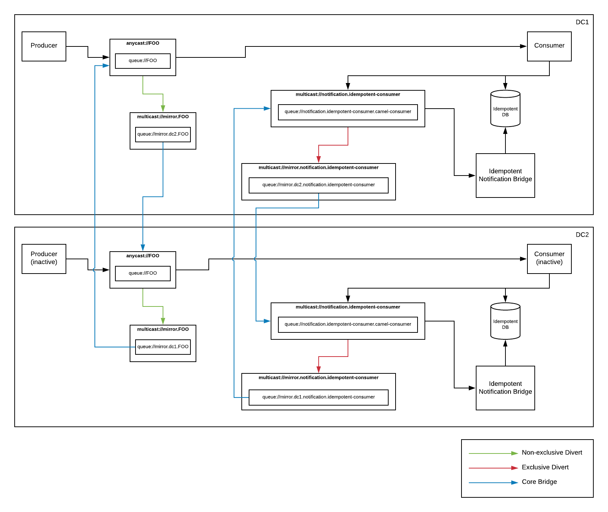

Artemis Disaster Recovery
A few years back, I wrote a blog about HA strategies for Fuse/AMQ. In it, I talked about a few potential solutions for setting up a DR (Disaster Recovery) configuration for ActiveMQ. The most popular solution, it seems, was to utilize block-level disk replication software. Since it’s been quite a while, and since we’ve updated our messaging code base to Apache Artemis, I figured I’d write up a new post with yet another potential architecture.
Before I begin, I’d like to state that the previous solution that I had outlined, though written for ActiveMQ instead of Artemis, still applies. If you want to guarantee absolutely no loss or duplication of data, you must replicate things synchronously. So if that’s your requirement, my recommendation would still be to use a block-level disk replication software like LINBIT DRBD or Red Hat Ceph. However, because these solutions are fully synchronous, they can perform a bit slowly. In addition, there are other issues that you need to account for. For instance, what do you do if the backup site is down? Do you keep the primary site running and have the backup “catch up” once it comes online? If so, then you risk the loss or duplication of data if you suffer an outage while the two are out-of-sync. If not, then you have two potential points of failure that would cause a total outage as an outage of either DC would mean you’d have to stop processing.
But what if I’m willing to give up a little bit of that “absolute” guarantee in order to get a solution that performs well? For that, I’ll need to switch over to a solution that’s asynchronous in nature (or “near real-time” as Oracle likes to call it). That should take care of my performance issues. But what about the the other scenario where my backup site is down? I’ll need a way to buffer up the data so that, when the backup site comes back online, I can finish sync’ing and not drop anything. Finally, it would also be nice to be able to fail back once the primary comes back online. That means that I’ll need to sync data from primary to backup, but also from backup to primary.
So what would such a solution look like in Artemis? Well, sort like this:

Let’s break it down… First, we can use a feature known as “diverts” to wiretap off a local copy of our messages into one or more buffer queues. Then, we can use something called a “core bridge” to forward the buffered messages to an address on a secondary site. Technically, using these features, we can have as many backup sites as we’d like. We’re only limited by our available bandwidth. So mirroring of data is actually quite simple. At least in concept…
One issue that we will encounter is that, because we’re forwarding to/from the same named address on each data center, the messages will continue to divert and forward around in an endless loop. Not ideal. What we really need is some way to selectively divert messages so that we’ll only copy/forward messages that originated at our DC. Any other messages would still be processed, but we would assume that they were sent from another DC and thus we would not need to forward them around. Luckily, diverts include the ability to filter. So we can simply add a header stating the origin DC and then use that to filter out any messages that did not originate in our DC. That means that we just need all of our clients to include that header, and we’ve solved our circular forwarding issue. But what if I don’t control or can’t change my clients to add that header? Well, core bridges allow you to specify a message transformer. So we can use that to automatically “stamp” the messages as they’re forwarded. Neat!
So now we’ve got the mirroring portion done. What’s next? Ok… A mirror is just a copy of the data. So that means that when we failover to our backup, we’ll process all the same data again resulting in duplicates. This might be ok if your application code handles it. If so, you can stop here. This is all you need. If, however, your application code does not handle duplicates, we’ll need a solution to filter out messages that we’ve already processed. For that, of course, I’ll use Camel. :)
Camel has an EIP known as Idempotent Consumer that will keep track of processed IDs and skip them if you try to process them again. Perfect! We’ll just use that… It even gives me the option to plug in whatever idempotent repository implementation I’d like. There are several to choose from. Hopefully the next issue is obvious at this point. If I’ve got a local (to my DC) repository keeping track of processed message IDs, how do I get that information over to my other DC. What I really need is a way to add something to my local ID repo, and also mirror it off to my other DC so it’s added in that DCs local repo as well. There are lots of ways to do this (ie, Oracle GoldenGate, Debezium, Ceph, DRBD, …), but I’m already replicating my message data in artemis using diverts and core bridges. So why don’t I just do that here as well? Basically, I just need to create a custom idempotent repository implementation that updates its local repo, but also sends a notification to an Artemis address. That message will be diverted to a buffer queue, then forwarded across with a core bridge. Then I just need one more component that picks those messages up and adds them to the local ID repo. Easy!
So now I have a solution that will mirror data between DCs. I can mirror between as many as I’d like. I can fail over and fail back. I can detect and skip duplicates. So what’s the catch? Well, because my replication is asynchronous, I can’t run my consumer in more than one DC at a time. If I do, I will run the risk of processing duplicates since the messages might replicate and get processed before the idempotent ID notification. But since this is a DR solution, that’s probably not too big of a deal. Technically though, I lied a bit. A more accurate statement would be that I can’t run a consumer for a given queue on more than once DC at a time. That means that, if I have several queues, I can spread my consumers across DCs evenly. If I need to, I can fail them over to another DC, and then fail them back when ready. But I’m partitioning the processing of my individual queues across my DCs. This is known as “partitioned active/active” and it means I get to utilize the hardware on all my DCs instead of having them just sit around as backups. Awesome!
All of this is fine and good. But how about some code? Here’s a link to a repo where I’ve implemented this solution: [https://github.com/joshdreagan/artemis-async-dr]. There are instructions for running it on bare metal (or AWS, or whatever), as well as instructions for running it on OpenShift. Enjoy!
Artemis Disaster Recovery
https://blog.joshdreagan.com/2019/10/14/artemis_disaster_recovery/